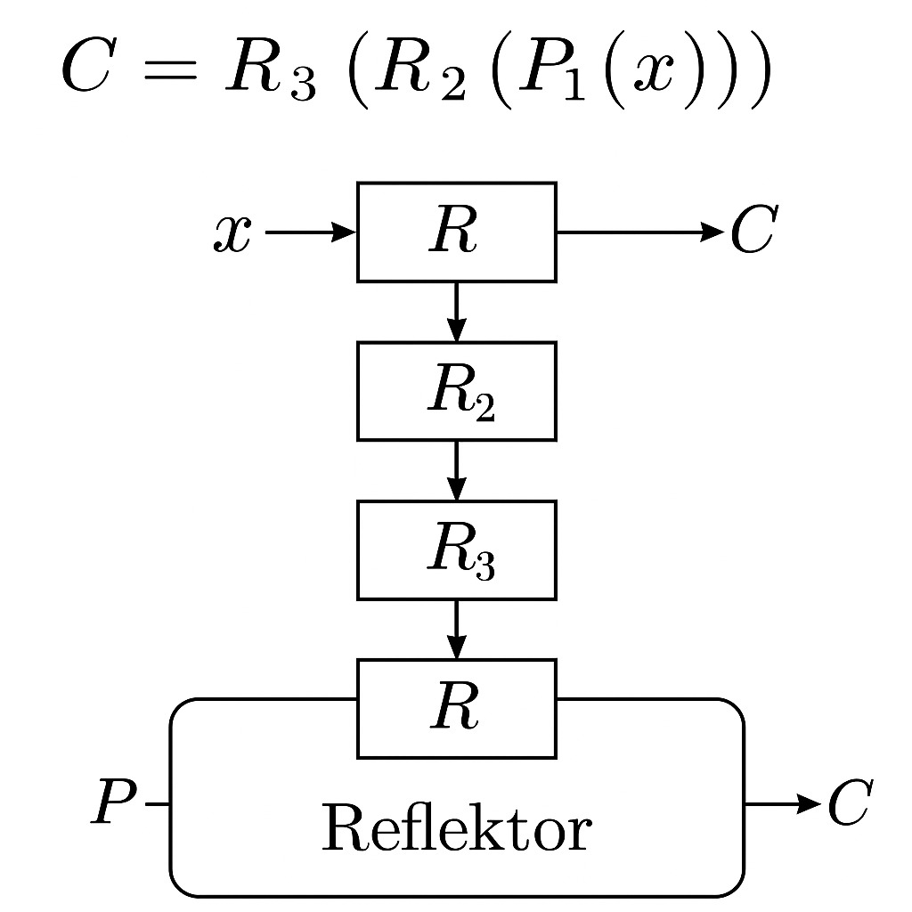
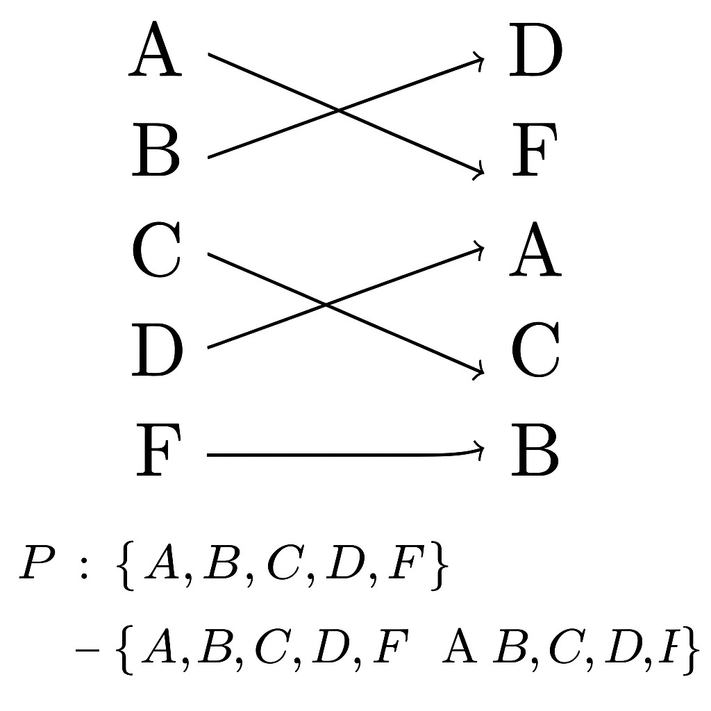

A máquina Enigma foi um dispositivo de codificação utilizado pela Alemanha durante a Segunda Guerra Mundial. Desenvolvida por Arthur Scherbius, a máquina utilizava um sistema de rotores para gerar cifras complexas, quase impossíveis de serem decifradas sem o conhecimento correto da configuração dos rotores e das chaves de codificação.
Funcionamento da Máquina
A Enigma é composta por uma série de rotores (geralmente 3 ou 4) que alteram o caminho das letras, realizando uma substituição baseada em uma tabela. A cada vez que uma tecla era pressionada, os rotores giravam, mudando a cifra e aumentando a complexidade da codificação.
Fórmulas e Códigos
A fórmula matemática básica para a codificação e decodificação na máquina Enigma pode ser representada da seguinte forma:
C = E(P, K)
Onde:
C é o caractere codificado.
E é a função de codificação (Enigma).
P é o caractere original (plain text).
K é a chave, baseada na configuração dos rotores.
Conceitos Matemáticos Usados
Permutação de letras do alfabeto
Funções de substituição bijetoras
Cifras polialfabéticas
Movimento de rotores (comutadores rotativos)
Ciclos de substituição (ex: A → D → F → B → A)
Exemplos de Fórmulas
Substituição simples:
f(x) = P(x)
Onde P é uma permutação do alfabeto.
Criptografia de múltiplas camadas com rotores:
C = R₃(R₂(R₁(P(x))))
Onde R₁, R₂, R₃ são os rotores e P é o plugboard.
Função reversível com refletor:
D(C) = x
O refletor permite que a função de codificação seja invertida.
Imagens Ilustrativas

Permutação de letras do alfabeto

Composição de funções com rotores e refletor